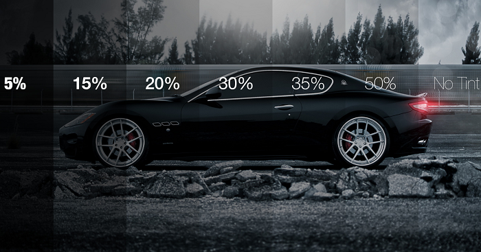
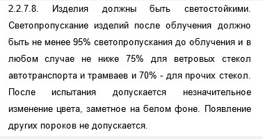
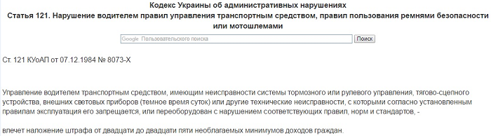

- Какая тонировка стекол разрешена в Украине?
- Закон о тонировке, ГОСТ 5727-88: требования и применение
- Проверка тонировки автомобильного стекла
- Условия при измерении степени тонировки стекла
- Как избежать штрафа за тонировку?
- Тонировка машин: штраф или защита прав потребителя
- Размер штрафа за нарушение норм тонировки, Украина
- Преимущества и недостатки тонировки авто
В пылу спора участники таких дискуссий делятся своим горьким опытом, рассказывают о строгости патрульных дорожных служб, штрафах и даже судебных исках.
В этой статье попробуем разобраться с проблемой (если это можно назвать проблемой) тонировки машин, рассмотрим, в каких случаях налагается штраф за тонировку, как избежать штрафных санкций, а также приведем первоисточники документов, регулирующих степень тонировки, местоположение и ее допустимость для различных транспортных средств.
КАКАЯ ТОНИРОВКА СТЕКОЛ РАЗРЕШЕНА В УКРАИНЕ?
Для начала стоит вспомнить о том, что Правилами дорожного движения Украины предписывается запрет на установление предметов или покрытий, которые препятствуют прохождению света через автомобильное стекло. Эта норма прописана в статье 31.4.7, там же есть примечание, в котором оговаривается допустимость прикрепления цветной или светоотражающей пленки в виде полоски, размещенной в верхней части лобового стекла.
В приложении также прописана допустимость применения тонировки стекла, отвечающей ГОСТу 5727-88, кроме зеркальной тонировки. Для автобусов допускается использование занавесок на боковых окнах.
Допускается:
- Полоска из прозрачной цветной пленки в верхней части лобового стекла;
- Тонировка по ГОСТу 5727-88, кроме зеркальной тонировки;
- Занавески на боковых стеклах в автобусах.
ЗАКОН О ТОНИРОВКЕ, ГОСТ 5727-88: ТРЕБОВАНИЯ И ПРИМЕНЕНИЕ
Кроме Правил дорожного движения, права и обязанности водителя (автовладельца) регламентирует также Закон Украины «О дорожном движении». Источник здесь: http://zakon2.rada.gov.ua/laws/show/3353-12
В более узком смысле требования относительно тонировки автомобильных стекол прописаны в ГОСТе 5727-88. В частности, в разделе 2.2.7.8 говорится, что степень светопропускания должна быть не ниже 75% для ветровых стекол и не ниже 70% для остальных стекол.
На практике степень светопроникаемости трактуется так:
- Для лобового стекла – не менее 75%;
- Для боковых стекол – не менее 70%;
- Для заднего стекла – не указано;
- Зеркальная тонировка запрещена для всех видов автомобильных стекол.
Такие правила тонировки авто.
Проверка тонировки автомобильного стекла
Если владелец транспортного средства уверен в том, что его автомобильные стекла затонированы в соответствии с правилами, он может смело отстаивать свою правоту в случае, если сотрудник дорожно-патрульной службы будет доказывать ему обратное. Ни для кого не секрет, что отношения автолюбителя и инспектора патрульной службы не всегда бывают беспроблемными. Чтобы знать, как защитить себя от надуманных претензий в правомерности тонировки, воспользуемся опытом других автолюбителей, а также советами опытных юристов.
Итак, если представитель правоохранительных органов усомнился в том, что тонировка вашего автомобиля соответствует ГОСТу, он может воспользоваться специальным измерительным прибором. Прибор, измеряющий степень светопропускной способности автостекла, тауметр
«Блик». Он работает с электропитанием, которое подается от портативного автомобильного прикуривателя. Кроме этого, прибор должен не реже 1 раза в год проходит поверку в специализированном центре.
Условия при измерении степени тонировки стекла
Во время проведения измерения светопропускной способности автостекла должны быть выдержаны температурные параметры, показатели атмосферного давления и влажности: измерение нельзя проводить в дождливую или морозную погоду, а также при условиях повышенной влажности, которая может сопутствовать снегопаду или туману.
Если хотя бы одно из условий не соблюдено, автомобилист может отказаться от проведения процедуры измерения степени тонировки. Любопытно, что для работы измерительного прибора требуется источник непрерывного питания в 12 вольт, который может быть обеспечен с помощью автомобильного аккумулятора (через гнездо портативного прикуривателя).
Если водитель в вежливой форме сошлется на то, что прикуриватель не вполне может обеспечить бесперебойное электроснабжение, то таким образом он сможет избежать процедуры измерения тонировки.
Итак, изложим в виде тезисов условия проверки:
- Температура окружающей среды +20 С;
- Атмосферное давление 80-106 кПа;
- Влажность воздуха 40-80%;
- Непрерывный источник энергопитания 12 В.
Стоит ли говорить о том, что водитель имеет полное право потребовать от инспектора ДПС показаний температуры, атмосферного давления и влажности прямо на месте проведения измерения тонировки. Как видите, не все так просто с процедурой измерения тонировки авто, и водитель может отстаивать свои права, ведя диалог с инспектором.
Если взаимопонимания достичь не удалось, то ознакомьтесь с разделом ниже.
Как избежать штрафа за тонировку?
Если инспектор дорожно-патрульной службы настаивает на проведении процедуры измерения тонировки, водитель не должен препятствовать ему в этом. Следует иметь в виду, что по факту проведения какого-либо действия, инспектор составляет протокол об административном правонарушении.
В этом случае водитель может в протоколе указать, что во время измерения тонировки ему не были предоставлены соответствующие документы на измерительный прибор (сертификация и заключение о ежегодной поверке), а также не были соблюдены условия, при которых производился замер степени тонировки.
Сделанная отметка в протоколе об административном правонарушении – это только полдела. После составления документа водитель должен немедленно обратиться в отделения, координирующее работу дорожно-патрульной службы с жалобой. Обычно, это можно сделать в течение 10 дней с даты составления протокола, а также следует обратиться в судебные инстанции для обжалования решения об административном правонарушении.
Важно понимать, что прибор измерения тонировки будет показывать процент света, которое автомобильное стекло способно пропустить.
Полученный остаток от 100% и будет величиной тонировки.
Например, если на датчике будет 75%, то это значит, что 75% света проникло через стекло, а 25% задержано тонировкой. Следовательно, степень тонировки и составляет 25%.
ТОНИРОВКА МАШИН: ШТРАФ ИЛИ ЗАЩИТА ПРАВ ПОТРЕБИТЕЛЯ
Выше было сказано, как водитель может избежать штрафа за превышение уровня тонировки автомобиля. Однако, мы совсем выпустили из вида тот момент, что водитель, по сути, является потребителем, который приобрел автомобиль с заводской тонировкой или произвел тонировку в специализированном автосалоне.
Что из этого следует? А следует то, что, используя нормы, прописанные в Законе Украины «О защите прав потребителей», водитель, как потребитель может обратиться в компанию/предприятие, которое производило тонировку с претензией и требованием привести тонировку в соответствие действующим нормам.
Разумеется, чтобы требование было принято, необходимо наличие документального подтверждения того, что услуга тонировки автомобильных стекол была произведена именно в названном автоцентре/мастерской.
РАЗМЕР ШТРАФА ЗА НАРУШЕНИЕ НОРМ ТОНИРОВКИ, УКРАИНА
Кодекс об административных правонарушениях Украины (КоАП) в части 1 статьи 121 прописывает наказание в виде штрафа, размер которого варьируется от 20 до 25 нмдг (необлагаемый минимум доходов граждан) за управление автомобилем, имеющим «другие технические неисправности». На сегодняшний день сумма штрафа составит от 340 грн до 425 грн.
Как видим, в Украине допускается тонировка автомобиля, в частности тонировка лобового стекла, тонировка боковых стекол, если это сделано в соответствии с требованиями, изложенными в приведенных выше нормативных документах.
Лобовое стекло еще называют ветровым стеклом, оно обеспечивает передний обзор для автомобилиста, что является обоснованием для есткой стандартизации уровня тонировки. Боковые стекла обеспечивают водителю обзор в секторе 180 градусов, что также объяснимо для целей регулирования уровня тонировки.
Как регламентируется тонировка, штраф Украина в 2018 году рассмотрели, теперь несколько слов о том, в чем полезность и вредность тонировки.